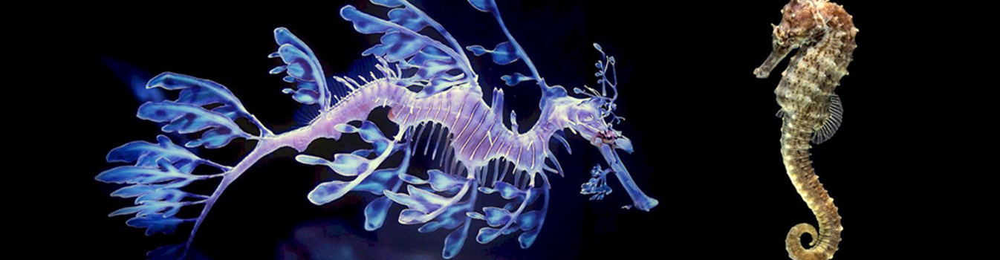
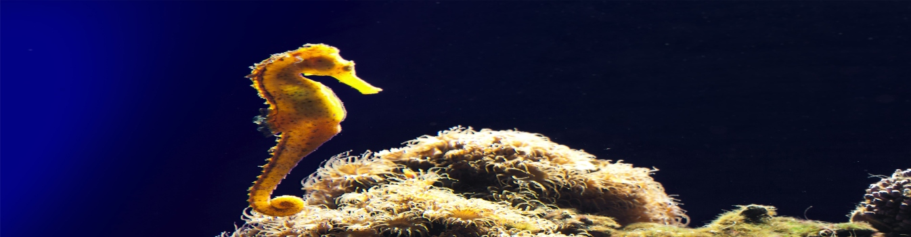

Los caballitos de mar o hipocampos (género Hippocampus) constituyen un grupo de peces marinos pertenecientes a la familia Syngnathidae, que también incluye a los peces pipa.
Su etimología, creada por San Isidoro de Sevilla en su obra Etimologías, procede de la combinación de los dos términos en griego clásico ίππος (hippos, que significa "caballo"), por el peculiar parecido que presenta su cabeza con la de los caballos, y kampos ("monstruo de mar").


Adoptan una posición erecta, impulsándose con su aleta dorsal. El desplazamiento vertical lo consigue ajustando el volumen de aire de las vejigas natatorias y mediante las aletas pectorales. Las aletas son muy tenues y tienen forma de abanico. La dorsal impulsa los desplazamientos horizontales, y la agita unas tres veces y media por segundo. No tienen aleta anal, en su lugar tienen una cola prensil, que se enrolla en espiral y les permite aferrarse a corales y plantas subacuáticas.